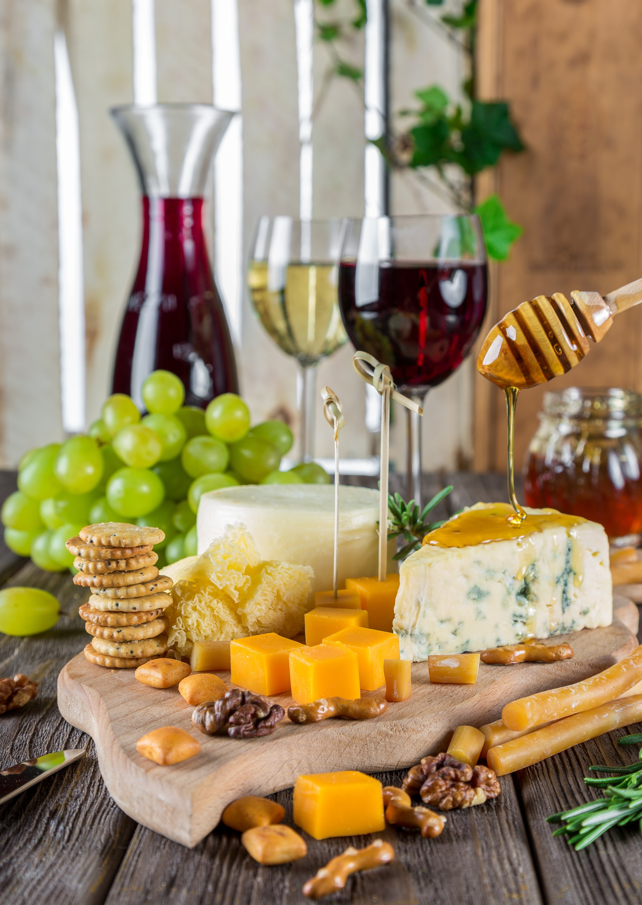

Pčelinji med se sastoji od oko 41% fruktoze, 34% glukoze, 2% saharoze, 18% vode i 6 % drugih materija (minerala, vitamina, organskih kiselina, itd.). Zbog visoke količine šećera u sebi, med treba umereno konzumirati, do 3-4 kašičice dnevno.
U pravilnoj ishrani šećeri treba da su zastupljeni u količini manjoj od 6% od ukupnih dnevnih čovekovih potreba za energijom. Međutim, statistički podaci ukazuju na prekomernu potrošnju belog šećera kod ljudi širom sveta, dok naučnici upozoravaju da ova loša životna navika dovodi do teških zdravstvenih problema kod ljudi, posebno ako je povezana sa drugim rizičnim faktorima kao što su pušenje i manjak fizičke aktivnosti.
Med predstavlja prirodnu alternativu šećeru! On predstavlja lako svarljivu hranu koja sadrži oko 200 različitih sastojaka. U najvećem procentu sadrži šećere (70-80%) u obliku monosaharida glukoze i fruktoze, ali u sastav meda ulaze i brojni vitamini, minerali i enzimi. Od minerala u medu su zastupljeni: gvožđe, kalijum, natrijum, magnezijum, kalcijum, fosfor, bakar, mangan, silicijum i drugi. Od vitamina u medu imamo: vitamine B kompleksa, vitamin A, C, E i provitamin D. Osim ovih sastojaka, med sadrži i brojne druge biljne enzime i flavonoide koji utiču blagotvorno na ljudski organizam. Med ima i probiotsko dejstvo, jer utiče na povećanje populacije korisnih bakterija u crevnoj flori.
Med je namirnica koja zauzima visoko drugo mesto u svetu (posle maslinovog ulja) po količini falsifikovanja. Problem falsifikovanja meda nemaju samo zemlje u razvoju, već i visoko razvijene zemlje sa dobro uređenim tržišnim institucijama. Razlog tome leži u činjenici što je med retka, prirodnim uslovima i radom ograničena, visokokvalitetna i visokovrednovana roba, što povlači i njegovu visoku cenu. Ta visoka cena je motiv za brojne falsifikatore meda, koji se dovijaju na različite načine kako bi došli do visoke i lake zarade, obmanjujući potrošače i pričinjavajući velike štete pčelarima širom sveta. Falsifikati meda se najčešće sastoje od raznih glukozno-fruktoznih sirupa pravljenih od kukuruza (skroba), ili invertovanog šećernog sirupa, dehidriranog na najrazličitije načine, sa dodakom malih količina meda, ili čak šta više raznih veštačkih boja i aroma.